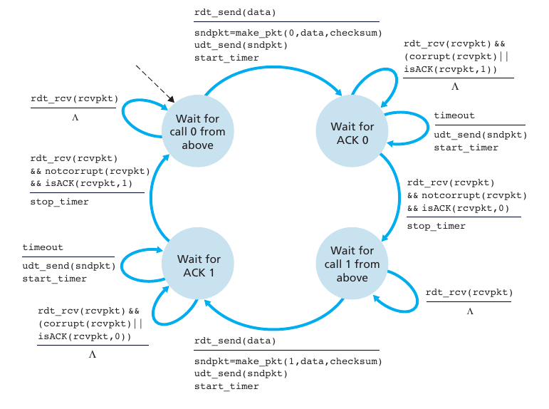
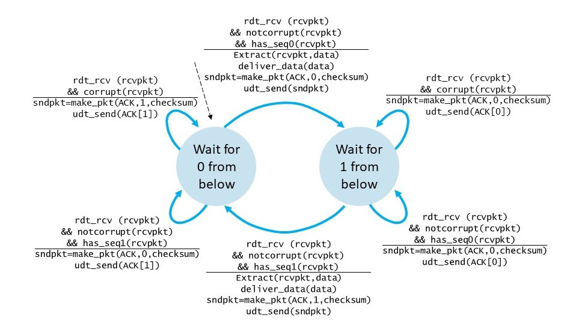

Jaringan Komputer
Finite State Machine
Apa itu Finite State Machine?
Finite State Machine (FSM) adalah rangkaian digital yang terdiri dari 3 bagian, yaitu Next-State Logic Circuit, State Memory Register dan Output Logic Circuit. Logic Circuit adalah rangkaian hasil implementasi persamaan logika, sedangkan state memory register adalah sekumpulan Flip-Flop yang jumlahnya sama dengan jumlah bit feedback dan terkait dengan jumlah state. Misalnya jika jumlah state antara 5 sampai 8, maka jumlah feedbacknya harus terdiri dari 3 Flip-Flop. Untuk sinkronisasi, State Memory Register dilengkapi dengan clock. Kecepatan clock (clock rate) tidak boleh melampaui waktu propagasi terpanjang pada Next-state logic circuit.
Prinsip Kerja FSM dari Sisi Pengirim (Sender)
- Wait for call 0 from above, state ini menunggu panggilan dari atasnya (layer aplikasi). Ketika ada perintah maka akan dijalankan fungsi berikut:
- rdt_send(data) berarti data dari atas (layer aplikasi) telah diterima, maka akan dijalankan fungsi berikut
- sndpkt=make_pkt(0, data, checksum) berfungsi untuk membuat paket dan memberi sequence number 0 dan menyertakan checksum.
- udt_send mengirimkan paket kesisi penerima.
- start_timer berarti countdown timer dimulai.
- Wait for ACK 0, state ini menunggu ACK 0. Ada 3 fungsi pengecekan yang akan dijalankan yaitu:
- rdt_rcv (rcvpkt) && (corrupt (rcvpkt) || isACK(rcvpkt,1) fungsi ini dijalankan jika sender menerima ACK 1 (seharusnya ACK 0). Hal ini berarti ACK yang diterima sender telah corrupt atau rusak. Sehingga tindakan selanjutnya yang dilakukan adalah ∧ atau tidak melakukan tindakan apapun.
- timeout berarti countdown timer yang diberikan telah habis dan state belum juga menerima ACK 0, maka akan dijalankan tindakan berikutnya yaitu
- udt_send (sndpkt) berfungsi untuk mengirim ulang paket.
- start_timer berarti countdown timer kembali diulang
- rdt_rcv (rcvpkt) && (notcorrupt (rcvpkt) && isACK(rcvpkt,0) fungsi ini dijalankan jika sender telah menerima ACK 0. Hal ini berarti ACK yang diterima sender sudah benar dan tidak rusak. Sehingga tindakan selanjutnya adalah stop_timer atau menghentikan countdown timer
- Wait for call 1 from above, state ini kembali menunggu panggilan dari atas (layer aplikasi), ketika ada perintah maka akan dijalankan fungsi berikut:
- rdt_rcv (rcvpkt) fungsi ini hanya berjalan ketika dalam kasus premature timeout. Premature time out artinya ketika sender menerima 2 ACK pada paket yang sama kemudian salah satu ACK telah diterima maka ACK lainnya akan diabaikan dengan menjalankan fungsi ∧ (tidak melakukan tindakan apapun).
- rdt_send(data) berarti data dari atas (layer aplikasi) telah diterima, maka akan dijalankan fungsi berikut:
- sndpkt=make_pkt(1, data, checksum) berfungsi untuk membuat paket dan memberi sequence number 1 dan menyertakan checksum.
- udt_send mengirimkan paket kesisi penerima.
- start_timer berarti countdown timer dimulai.
- Wait for ACK 1. State ini menunggu ACK 1. Ada 3 fungsi yang akan dijalankan untuk mengecek apakah paket utuh atau corrupt
- rdt_rcv (rcvpkt) && (corrupt (rcvpkt) || isACK(rcvpkt,0) fungsi ini dijalankan jika sender menerima ACK 0 (seharusnya ACK 1). Hal ini berarti ACK yang diterima sender telah corrupt atau rusak. Sehingga tindakan selanjutnya yang dilakukan adalah atau tidak melakukan tindakan apapun.
- sndpkt=make_pkt(0, data, checksum) berfungsi untuk membuat paket dan memberi sequence number 0 dan menyertakan checksum.
- udt_send mengirimkan paket kesisi penerima.
- start_timer berarti countdown timer dimulai.
- timeout berarti countdown timer yang diberikan telah habis dan state belum juga menerima ACK 1, maka akan dijalankan tindakan berikutnya yaitu
- udt_send (sndpkt) berfungsi untuk mengirim ulang paket.
- start_timer berarti countdown timer kembali diulang
- rdt_rcv (rcvpkt) && (notcorrupt (rcvpkt) && isACK(rcvpkt,0) fungsi ini dijalankan jika sender telah menerima ACK 1. Hal ini berarti ACK yang diterima sender sudah benar dan tidak rusak. Sehingga tindakan selanjutnya adalah stop_timer atau menghentikan countdown timer
Siklus ini akan terus berlangsung dengan cara yang sama hingga pengiriman data selesai dilakukan.
Prinsip Kerja FSM dari Sisi Penerima(Receiver)
- Wait for call 0 from below,state ini menunggu perintah dari bawah (layer data link). Ketika perintah diberikan maka akan dilakukan fungsi rdt_rcv (rcvpkt) && notcorrupt (rcvpkt) && has_seq0(rcvpkt). Fungsi ini berarti
sebuah paket telah diterima dari layer bawah dan paket tersebut tidak corrupt serta paket tersebut memiliki sequence number 0. Karena sequence number 0 sesuai dengan yang diminta, maka akan dilakukan tindakan selanjutnya yaitu:
- Extract(rcvpkt,data) akan mengekstrak paket data
- Deliver_data (data) akan mengirim paket data ke layer aplikasi.
- sndpkt=make_pkt(ACK, 0, checksum) berfungsi untuk membuat paket yang berisi ACK dan memberi sequence number 0 dan menyertakan checksum.
- udt_send(sndpkt) berfungsi untuk mengirim paket ke sisi sender
- Wait for 1 from below.State ini menunggu perintah dari bawah (layer data link). Ketika perintah diberikan maka akan dilakukan fungsi berikut untuk mengecek apakah paket rusak atau tidak.
- rdt_rcv (rcvpkt) && corrupt (rcvpkt) akan dijalankan ketika paket yang diterima corrupt, maka tindakan yang akan dijalankan adalah
- sndpkt=make_pkt(ACK,0,checksum) akan membuat kembali paket yang berisi ACK dan memberi sequence number 0 dan menyertakan checksum
- udt_send(sndpkt) berfungsi untuk mengirim kembali paket ke sisi sender untuk memberitahu jika paket rusak
- rdt_rcv (rcvpkt) && notcorrupt && has_seq0(rcvpkt) akan dijalankan jika data utuh dan tidak corrupt, maka tindakan yang akan dijalankan adalah
- sndpkt=make_pkt(ACK,0,checksum) akan membuat paket yang berisi ACK dan memberi sequence number 0 dan menyertakan checksum
- udt_send(sndpkt) berfungsi untuk mengirim paket ke sisi sender untuk memberi tahu jika paket sampai dan tidak rusak
- rdt_rcv (rcvpkt) && notcorrupt && has_seq1(rcvpkt) dijalankan jika sebuah paket telah diterima dari layer bawah dan paket tersebut tidak corrupt serta memiliki sequence number 1. Maka tindakan selanjutnya adalah
- Extract(rcvpkt,data) akan mengekstrak paket data
- deliver_data (data) akan mengirim paket data ke layer aplikasi
- sndpkt=make_pkt(ACK, 1, checksum) akan membuat paket yang berisi ACK dan memberi sequence number 1 dan menyertakan checksum.
- udt_send(sndpkt) akan mengirim paket ke sisi sender
- rdt_rcv (rcvpkt) && corrupt (rcvpkt) akan dijalankan ketika paket yang diterima corrupt, maka tindakan yang akan dijalankan adalah
Siklus ini akan terus berlangsung sampai pengiriman data selesai.

- Andi Widad Sucitra
- D121191013
- sucitraandiwidad@gmail.com